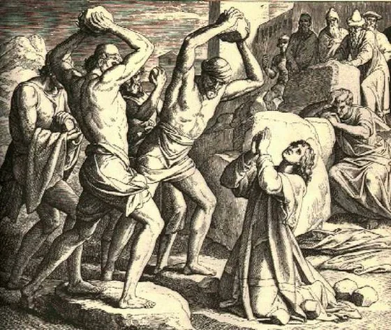

Was ist die Quelle des Islam?1
Diskussionen über den Islam sind sowohl in den Medien als auch in öffentlichen Debatten ständig präsent. Wie sollen wir entscheiden, wer in diesen Diskussionen im Recht ist und welche Ansichten den islamischen Wahrheiten entsprechen? Warum werden im Namen des Islam verschiedene Wahrheiten vorgebracht? Wie können wir den wahren Islam von den im Namen des Islam2 verfälschten Lehren unterscheiden?
Dieses Buch zielt darauf ab, diese Fragen zu beantworten und Klarheit in die oft verwirrenden Debatten zu bringen. Die zentrale Frage, die es zu klären gilt, lautet: „Was ist die Quelle des Islam?“ Die Antwort darauf bestimmt nicht nur unsere Sicht auf viele andere Fragen, sondern auch den richtigen Ansatz, um den Islam zu verstehen. Wie im Verlauf des Buches zu sehen sein wird, liegt der Grund für die unterschiedlichen Ansichten, die im Namen des Islam vorgebracht werden, in den verschiedenen Antworten auf diese Frage. Oft wird die Diskussion in den Medien und in der Gesellschaft geführt, ohne diese grundlegende Frage zu klären, was zu Verwirrung und Widersprüchen führt.
Die Antwort, die wir auf die Frage „Was ist die Quelle des Islam?“ geben, wird die Grundlage unserer Methode zur Interpretation des Islam bilden. Wer ohne diese Frage zu beantworten in Diskussionen eintritt, versucht, den Islam ohne Methode zu verstehen. Diese Menschen beantworten eine Frage mit dem Koran, eine andere mit einer Hadith-Quelle, wieder eine andere aus ihrer eigenen Weltanschauung, eine weitere aus einer bestimmten Rechtsschule und schließlich noch eine andere aus einer völlig anderen Rechtsschule. Menschen, die sich ohne Methode dem Islam nähern, neigen dazu, am Ende ihre eigenen Wünsche, Begierden und Obsessionen zu verinnerlichen und zu verallgemeinern. Da ihre Ansichten nicht auf soliden Überlegungen (Methoden) beruhen, können die Menschen, die diese Ansichten hören, nicht nachvollziehen, warum und woher diese Ideen stammen. Daher ist es von größter Bedeutung, eine Methode zum Verständnis des Islam festzulegen und die Frage „Was ist die Quelle des Islam?“ zu beantworten, um die Verwirrung zu beseitigen, die im Namen des Islam verursacht wird.
Der Islam ist ein von Gott den Menschen übermitteltes System. Die Frage „Was ist die Quelle des Islam?“ muss daher unbedingt beantwortet werden, um die Erwartungen, Wünsche, Gebote und Empfehlungen Gottes richtig zu verstehen. Ist die Quelle des Islam tatsächlich nur der Koran? Oder sind neben dem Koran auch die Hadithe eine Quelle des Islam? Können die Rechtsschulen als Autorität in religiösen Angelegenheiten betrachtet werden? Wie sollten wir die Sufi-Orden und ihre Scheichs bewerten, und welche Stellung haben sie im Islam? In diesem Buch werden wir all diese und ähnliche Fragen untersuchen und zeigen, dass falsche Antworten auf diese Fragen zu einer falschen Methode des religiösen Verständnisses führen und dass diese falsche Methode die Ursache für die im Namen des Islam vorgebrachten Erfindungen ist.
Nachdem Sie dieses Buch gelesen haben, empfehlen wir Ihnen, Personen, die sich zu islamischen Themen äußern, zuerst nach ihrer Methode beim Verständnis des Islam zu fragen und zu erfahren, wie sie die Frage „Was ist die Quelle des Islam?“ beantworten. Dann sollten Sie überprüfen, ob ihre Antworten (Methoden) im Einklang mit ihrer Praxis stehen. Allein diese Methode wird ausreichen, um festzustellen, wie widersprüchlich diejenigen sind, die als „Autorität“ in religiösen Angelegenheiten präsentiert werden.
Neben Personen, die ohne Methode über den Islam sprechen, sollten Sie auch auf diejenigen achten, deren Methode nicht mit ihrem Verhalten im Alltag übereinstimmt. Es ist möglicherweise nicht möglich, ihre wahren religiösen Überzeugungen anhand ihrer Taten zu erkennen. Zum Beispiel könnten Menschen, deren Antwort auf die Frage „Was ist die Quelle des Islam?“ sie dazu verpflichtet, wie Mitglieder des IS zu leben, einen Lebensstil haben, der nichts mit dem der IS-Mitglieder gemein hat.3 Diese Menschen sind diejenigen, bei denen eine Kluft zwischen ihrer Theorie/Methode und ihrer Praxis besteht. Wir sollten betonen, dass diese Menschen nicht eine Minderheit in der islamischen Welt sind, sondern eine bedeutende Mehrheit. Es ist notwendig, die Methode festzulegen, die Grundlage richtig zu legen und so den Widerspruch zwischen Glauben und Leben aufzuheben. Ein solides, rationales, vernünftiges Ergebnis kann nur durch eine Methode erreicht werden, die den Islam korrekt versteht und den Lebensstil nicht von dieser Methode trennt. Dies alles kann nur erreicht werden, wenn wir die Frage „Was ist die Quelle des Islam?“ richtig beantworten und konsequent auf dieser richtigen Antwort aufbauen, ohne davon abzuweichen.

Dies ist der Weg, um den Islam, das System, das Gott gesandt hat, vor Verfälschungen, Ausbeutung, Traditionen und Willkür zu schützen. Denn die Methode, die darauf abzielt, zwischen der Quelle des Islam und dem, was nicht die Quelle des Islam ist, zu unterscheiden, bedeutet tatsächlich, zwischen dem, was von Gott ist, und dem, was menschlich ist, zu unterscheiden. Genauigkeit in dieser Methode wird die Versuche vereiteln, menschliche Elemente mit göttlichen zu vermischen und sie als Islam zu präsentieren.
Geschichte der Religion: Ein Kampf zwischen Vernunft und Tradition
Die Propheten haben zu den Zeiten, in denen sie gesandt wurden, stets die bestehenden Traditionen hinterfragt und gegen solche Traditionen und festgefahrene Glaubenssätze gekämpft, die dem göttlichen Gesetz widersprachen. Wenn man die Verse des Korans betrachtet, sieht man, dass die Propheten die Menschen dazu ermutigten, nachzudenken und ihren Verstand zu benutzen, um gegen Traditionen und festgefahrene Überzeugungen vorzugehen, die im Widerspruch zur Religion Gottes standen. Der Koran ruft die Menschen dazu auf, die Zeichen Gottes auf der Erde, im Himmel und dazwischen zu betrachten und darüber nachzudenken. Doch diejenigen, die gegen den Koran opponierten, erklärten, dass sie sich an das System halten würden, das sie von ihren Vorfahren übernommen hatten, und dass sie diese Traditionen fortführen würden. Historisch gesehen war der größte Feind des prophetischen Aufrufs zur Nutzung des Verstandes nicht die Vernunft selbst, sondern die Tradition. Das Nachahmen des etablierten Systems, also des Systems, dem die Väter und Vorväter folgten, erschien vielen Menschen verlockender, als ihren Verstand zu gebrauchen. Die Gesandten Gottes haben im Laufe der Geschichte immer die Nutzung des Verstandes propagiert, während die gegnerischen Ansichten die Tradition, also den Konservatismus, verteidigten. Es ist eine merkwürdige Ironie, dass der Begriff „konservativ“ heute gleichbedeutend mit „fromm“ verwendet wird.
Nach der Religion, die der Koran lehrt, sollen Offenbarung und Vernunft das Handeln der Menschen lenken. Traditionen, auch wenn sie von der Gesellschaft angenommen werden, sollten nicht das Leben der Menschen leiten, wenn sie von der Offenbarung und der Vernunft nicht bestätigt werden. Wir empfehlen denjenigen, die ihr Leben ohne Belege nach dem System ihrer Vorväter ausrichten, die folgenden Verse des Korans zu lesen:4
Wie aus diesen Versen des Korans ersichtlich ist, führt das Anpassen an die Mehrheit oder die vorherrschende Meinung in der Gesellschaft nicht notwendigerweise zum rechten Weg. Doch heute beobachten wir, dass viele Menschen die Religion nahezu in eine Tradition verwandelt haben. Ohne die Wurzeln vieler im Namen des Islam akzeptierten Überzeugungen zu hinterfragen, akzeptieren sie diese unkritisch, weil es sich um weit verbreitete Meinungen handelt, weil ein Scheich/Gelehrter dies gesagt und behauptet. Der oben zitierte Vers 43:21 besagt, dass Ansichten, die im Namen der Religion ohne ein Buch aufgestellt werden, ungültig sind. Die nachfolgenden Verse zeigen, wie das Erbe der Vorväter vor das Buch Gottes gestellt wird.
Wenn uns Ansichten im Namen des Islam begegnen, sollten wir sie im Licht dieser Verse bewerten. Wir müssen untersuchen, worauf diese Aussagen beruhen und wie sie entstanden sind. Im zweiten Kapitel dieses Buches werden wir anhand von Koranversen zeigen, dass die einzige Quelle des Islam der Koran selbst ist. Wir werden den Gläubigen raten, nicht zuerst in ihren Köpfen einen Islam zu formen und diese dann mühsam im Koran zu suchen, sondern den Islam vollständig und ohne Hinzufügungen oder Auslassungen direkt aus dem Koran zu beziehen. In den folgenden Kapiteln werden wir untersuchen, wie ein großer Teil der Hadithe, die dem Propheten Muhammad zugeschrieben werden, in Wahrheit mit dem Koran und mit der Vernunft in Widerspruch stehen und wie sie verfälscht wurden. Wir werden zeigen, dass die Behauptung, Hadithe seien keine Quelle des Islam, keine Beleidigung des Propheten Muhammad darstellt, sondern vielmehr dazu dient, den Propheten von Verleumdungen zu befreien. Während Sie diese Kapitel lesen, empfehlen wir Ihnen, stets den oben erwähnten Vers 17:36 zu berücksichtigen und Ihre bestehenden Überzeugungen zu überdenken. Denken Sie daran, dass Sie, wie in Vers 39:18 gesagt, zuerst zuhören müssen, um das Beste zu erreichen. Hinterfragen Sie Ihre vorgefassten Meinungen, Traditionen und das, was Sie von Ihren Vorfahren über die Religion gelernt haben, im Licht der Verse 43:21-24. Bauen Sie Ihre Religion nicht auf Traditionen, sondern auf den Koran.
Koran und Vernunft im Einklang
Der Weg Gottes ist der Weg der Vernunft und des Gewissens. Die Art von Lebewesen, die Gott nicht gefällt, sind diejenigen, die taub gegenüber der Wahrheit sind und ihren Verstand nicht gebrauchen. Diese Menschen können die zahllosen Zeichen Gottes nicht erkennen, weil sie die Vernunft, die sie von anderen Lebewesen unterscheidet, nicht nutzen. Diejenigen, die den Islam, wie er im Koran beschrieben wird, nicht verstehen, haben den Islam als ein System von Dogmen, Aberglauben und unlösbaren Schwierigkeiten dargestellt. Mit diesem Verhalten haben sie Hundert Millionen von Menschen von dem Islam entfremdet und viele sogar in den Atheismus getrieben. Es ist daher von größter Bedeutung, den Islam, wie er im Koran beschrieben wird, von dieser traditionellen, erschwerten und irrationalen Religion zu unterscheiden. Dadurch wird der Islam, wie er im Koran gelehrt wird, von den Lasten, Hinzufügungen und Auslassungen befreit. Gleichzeitig wird es möglich sein, die Menschen, die vom Koran und vom Islam entfremdet wurden, zurückzugewinnen.
Diejenigen, die den Islam als eine gewalttätige und primitive Lebensweise darstellen, sind diejenigen, die den Koran nicht als ausreichende Quelle des Islam anerkennen. Diese Denkweise hat nicht nur erfundene Erklärungen, sondern auch ihre eigenen Imame, Mullahs und Scheichs zur Quelle der Religion gemacht und Systeme geschaffen, die in vielen Punkten im Widerspruch zum Koran stehen. Zudem haben sich diese Personen, die sich selbst als die „einzigen Vertreter der Religion“ betrachten, dazu ermächtigt, alle anderen als ungläubig zu erklären und zu verbannen.
Ziel dieses Buches
Dieses Buch hat das Ziel, die wahren Lehren des Korans darzulegen und zu zeigen, dass der Koran die einzige Quelle des Islam ist. Keine Person, keine Rechtsschule, kein Scheich und keine Praxis darf dem Islam etwas hinzufügen oder davon etwas wegnehmen. Die Religion soll den Menschen als Leitfaden dienen und nicht in Widerspruch zu ihrem Leben und ihrer Vernunft stehen. Leider ist die von Menschen erfundene Religion oft voller Widersprüche und Irrationalitäten. Der wahre Islam, wie er im Koran beschrieben wird, steht im Einklang mit der menschlichen Natur und der Vernunft. Es gibt im Islam zwar Wahrheiten, die über den Verstand hinausgehen, aber sie dürfen nicht mit irrationalen Elementen verwechselt werden. Das Ziel dieses Buches ist es, zu zeigen, dass der Koran die einzig wahre Quelle des Islam ist und dass alle anderen Quellen, die im Widerspruch zum Koran stehen, keine Gültigkeit haben.
Gott ist der einzige Gesetzgeber in der Religion. Gott hat seine Botschaften den Menschen durch den Koran vollständig, widerspruchsfrei, detailliert, umfassend und klar übermittelt. Dies bedeutet, dass wir die vom Koran dargelegten Prinzipien akzeptieren und niemanden außer Gott als Gesetzgeber anerkennen sollten. Der Prophet, der den Koran den Menschen überbrachte, die ersten Muslime organisierte und sich selbst in religiösen Angelegenheiten ausschließlich an den Koran hielt, hat keine anderen religiösen Quellen geschaffen oder verbreitet. Wenn ein dem Propheten zugeschriebenes Wort oder eine Interpretation dem Koran widerspricht, zum Islam etwas hinzufügt oder wegnimmt, dann ist diese Aussage sowohl eine Verfälschung des Islam als auch eine Verleumdung des Propheten. In den folgenden Kapiteln werden wir die arabischen, umayyadischen und abbasidischen Traditionen und Bräuche, erfundene Erklärungen, historische Entscheidungen, die nur auf bestimmte Epochen zutrafen, und persönliche Ansichten untersuchen, die dem Islam eingeführt wurden. Wir werden die religiöse Praxis, die mit einer Vielzahl von Erfindungen und Erklärungen, die im Koran keine Grundlage haben, gefüllt wurde, analysieren. In diesem Zusammenhang werden wir verstehen, warum der Koran die einzig wahre Quelle des Islam sein sollte und warum Dinge, die im Koran nicht erwähnt werden, keine universellen Prinzipien des Islam sein können. Wir werden auch erkennen, dass viele als endgültige religiöse Vorschriften betrachtete Aspekte im Koran nicht vorkommen und dass es daher ein Fehler ist, ihnen eine religiöse Bedeutung beizumessen. Indem wir uns dem Koran zuwenden, werden wir den Islam neu kennenlernen.
Als Forscher des Korans sehen wir es als unsere Pflicht an, unsere Erkenntnisse in dieses Buch einzubringen, insbesondere angesichts der Tatsache, dass gefälschte Hadithe und Kommentare der Rechtsschulen, die als Islam präsentiert werden, viele Menschen vom Islam entfremdet haben. Wir empfehlen Ihnen, dieses Buch mit kritischem Verstand zu lesen. Die Wahrheit und die einzige Quelle des Islam ist das Buch Gottes, der Koran. Unsere Überlegungen sind nur insofern wahr, als sie mit dem Koran übereinstimmen. Diese Arbeit hat das Ziel, den Islam aus der Umklammerung von nicht-koranischen Einflüssen zu befreien und die gegen unseren Propheten erhobenen Verleumdungen offen zu legen. Wir betrachten alle Muslime als unsere Brüder, machen keine Unterscheidung zwischen den verschiedenen Konfessionen und haben nicht die Absicht, jemanden zu verletzen oder zu kränken. Doch wir scheuen uns auch nicht davor, die im Namen des Islam erfundenen Lehren und die gegen unseren Propheten erhobenen Verleumdungen aufzudecken, selbst wenn dies Unbehagen auslöst. Wenn wir auch nur einen kleinen Beitrag zum Verständnis des Islam in einer Weise leisten können, die Gott gefällt, werden wir sehr glücklich sein.